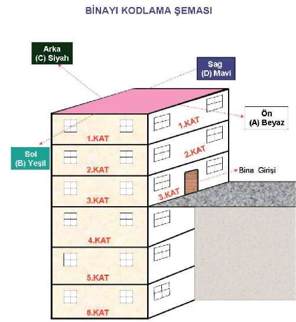

BÖLÜM
OPERASYON VE OPERASYON TEKNİKLERİ
^ Muhabere çevrimi ve güvenliğinin sağlanması ve gerekli durumlarda kanal tahsisinin yapılması.
^ İhtiyaç duyulan her türlü kurum ve kuruluşlar ile irtibata geçilerek ön hazırlıkların tamamlanması.
2.3. Operasyon Alanının Tespiti ve Keşfi
Operasyondan önce hedef noktanın detaylı bir şekilde keşfinin yapılması ve elde edilen doğru bilgiler, yapılacak operasyonun başarısına doğrudan etki eden faktörlerdendir. Keşif yapılırken özellikle dikkate alınması gereken konular şunlardır: (Bakınız Şekil-21.b)
^ Hedef noktanın fiziki durumu, çevre faktörleri
^ Yol ve trafik durumu
^ Hedef noktanın değişik açılardan fotoğrafının çekilmesi ve kamera ile görüntülenmesi
^ Hedef noktanın krokisinin çizilmesi
^ Çok katlı binalarda, katların yukardan aşağıya doğru numaralandırılması
^ Bina ve benzeri kapalı alanların giriş yönüne göre (ön beyaz, arka siyah, sağ taraf mavi, sol taraf yeşil) kodlandırılması,(Bakınız Şekil-21.a) UYARI
Hedef noktanın detaylı bir şekilde keşfinin yapılması konusunda; çok katlı binalarda, katların yukardan aşağıya doğru numaralandırılması hususu önemlidir.
Şekil 21 a) Bina kodlama Şeması